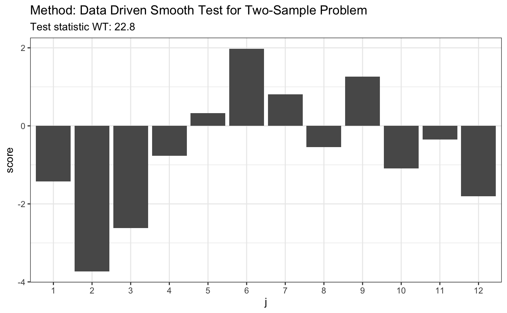

Data Driven Two-Sample Test
ddst.twosample.test.RdPerforms data driven smooth test for the classical two-sample problem. It is aspecial case of data driven test for k-samples. Detailed description of the test statistic is provided in Wylupek (2010).
ddst.twosample.test(x, ..., d_N = 12, c = 2)
Arguments
| x | a list with two vectors or a single vector. |
|---|---|
| ... | if x is a single vector, then the second vector is provided in the ... |
| d_N | an integer, number of coordinates that measure potential deviation from null hypothesis |
| c | a positive number, penalty for model selection rule. Section 5.1 in Wylupek (2010), suggest that a good choice is c = 2, when k = 2, and c = 2.3, when k >= 3. |
References
Data-driven k-sample tests. Wylupek (2010) https://www.jstor.org/stable/40586684?seq=1
Examples
# H0 is true x <- runif(80) y <- runif(80) t <- ddst.twosample.test(x, y) t <- ddst.twosample.test(list(x, y)) t#> #> Data Driven Two-Sample Test #> #> data: #> W.T = 0.008543, l = NA #>plot(t)#> #> Data Driven Two-Sample Test #> #> data: #> W.T = 47.032, l = NA #>plot(t)